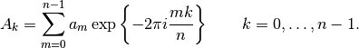

FFT Normalization¶
Different FFT implementations often have different normalization parameters. Most FFTs will be defined such that a forward transform follwed by an inverse transform will result in the same values. However, implementations tend to apply the normalization at different points. This document describes the normalizations applied by each FFT, and their implications for the Fourier transform reconstructor.
The implementation of the FTR is taken from Lisa Poyneer’s IDL implementation (which is not) included in this distribution. However, we can use the IDL FFT definition to clarify our FFT normalization. This document shows how to modify other FFT normalizations so that they match the IDL normalization, the canonical one used in this algorithm. [1]
| [1] | There is nothing more correct about the IDL implementation, it just happens to be the canonical implementation as it is the referernce implementaiton provided to match Lisa’s thesis. |
IDL Normalization¶
IDL defines the FFT (here) as
and the inverse FFT as
The important part of this definition for our purposes is the factor of which is applied to the forward transform.
When we apply the spatial filters used in the Fourier transform reconstructor, we apply two forward transforms (one for x, one for y), and one backwards transform. Collecting only the factors of , we get two factors due to the two forward transforms which are added together. No factor is included in the inverse transform.
The normalization factor for the full FTR filter is .
Numpy Normalization¶
numpy defines the forward FFT (see here) as

and the inverse FFT as
Comparing this definition to the one used by IDL, we can see that the normalization is applied as a factor in the inverse transform.
Comparing to the IDL implementation, when we apply the two forward transforms, then add them, and apply a single reverse transform, we find that the total normalization is . Therefore, we should multiply the Fourier transform of the phase estimate by 2 to match the normalization used by IDL.